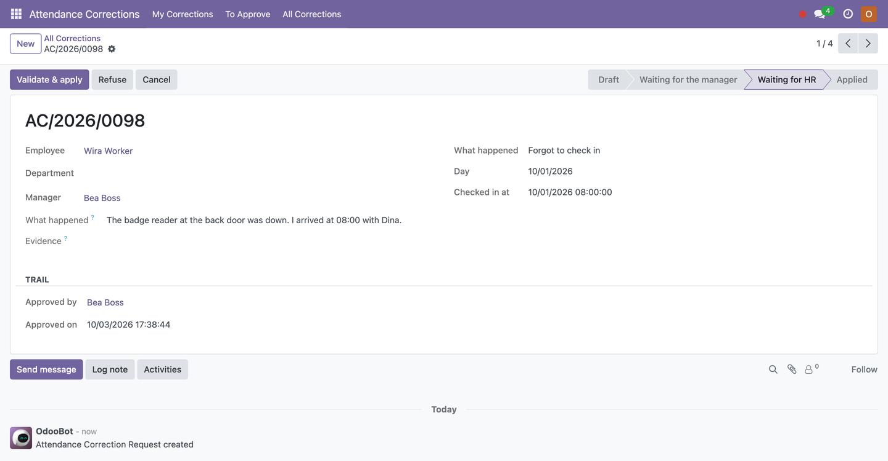
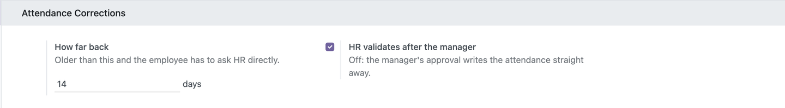
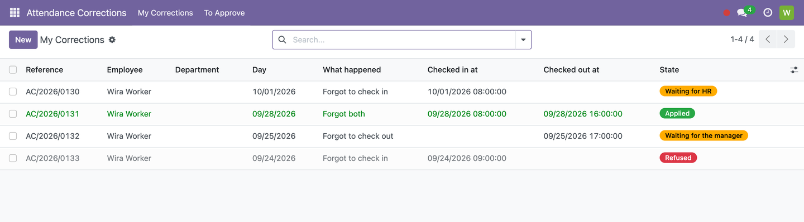
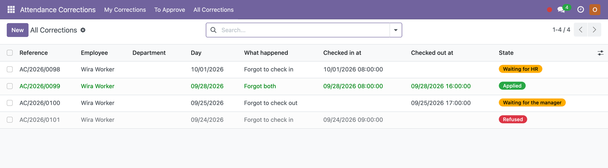

Somebody forgot to clock in. Fix it the way an audit would want it fixed.
Odoo 17.0 · 18.0 · 19.0 | Community & Enterprise | Free, LGPL-3
Today the fix is a message to HR and a hand-edited attendance: no record of who asked, who agreed, or why the hours changed. Here the employee files the correction themselves — the day, the time, what happened, a photo of the gate log if they have one. Their manager approves it, HR validates it, and only then does the attendance move. The whole trail stays attached to the record it changed.

Three steps, about two minutes. Nothing to connect, nothing to schedule.
|
STEP 1
Install itIt pulls in Attendances if you do not have it yet. A new Attendance Corrections app appears in the menu for everyone who may use it. |
STEP 2
Hand out two accessesIn Settings → Users, under Attendance Correction: give Employee to everybody who clocks in, and Officer to whoever in HR should validate. Managers need nothing extra — they are read from the org chart. |
STEP 3
Check the two settingsSettings → General Settings → Attendance Corrections: how far back a correction may go (14 days by default), and whether HR validates after the manager. That is the whole configuration. |

For each employee to be found, their Odoo user must be linked to their employee record (Employees → HR Settings → Related User) — the same link Attendances itself needs.
Four steps, each one leaving its mark on the record.
| 1. The employee files My Corrections → New |
They pick what happened (forgot to check in, to check out, or both) and the day. The form fills in the hours they were due to work that day; they change them if needed, write what happened, attach evidence, and press Submit. Their own name and manager are filled in for them and cannot be typed over. |
| 2. The manager approves To Approve |
The manager from the org chart gets an activity and finds the request under To Approve. They approve, or refuse with a reason. Nothing has touched the attendance yet. |
| 3. HR validates All Corrections |
Validate & apply is the step that actually writes the attendance — created, or closed if one was left open. A smart button on the request opens the attendance it produced. |
| 4. Everyone can see why The record itself |
The request keeps who approved it and when, who validated it and when, the employee's own explanation, the evidence, and the attendance it changed. The attendance carries a note naming the request. |

What the employee sees: their own requests and their status. Nobody else's.
Three kinds of forgettingMissed the check-in, missed the check-out, or missed both. A missed check-out closes the attendance that is still open rather than adding a second one beside it — the mistake most hand-fixes make. |
Two clicks, usuallyPick the day and the form offers that employee's own scheduled hours for it, read from their working calendar. Most requests need nothing typed but the reason. |
It refuses the impossibleHours in the future, a check-out before its check-in, a day already covered by an attendance, a check-out for a day nothing was left open — each is stopped at the door, before anyone is asked to approve it. |
The day that is still runningA forgotten check-in from this morning is entered open, so the employee clocks out normally at the end of the day. One from last week is closed at the end of that day's schedule, or at the next attendance if one started earlier. |
Refusing takes a reasonA correction turned down without one just comes back tomorrow as the same question. The reason goes to the employee, and the request can be put right and sent again. |
Nothing is deletedA request in the middle of its approval cannot be deleted, only cancelled, and the hours cannot be edited once it has been sent. The trail is the point. |

| Employee | Files their own correction and follows it. Sees nobody else's — enforced by a record rule, not by hiding a menu. |
| Manager | Taken from the org chart, not typed. Sees and approves their own team's requests, and gets an activity for each one. |
| Officer | Validates, which is the step that actually writes the attendance. Sees every request and may file one on somebody's behalf. |
An employee without a manager in the org chart goes straight to HR, rather than waiting for an approval that will never come.
Does it work with the kiosk and the systray timer?
Yes. It writes ordinary hr.attendance records, the same ones the kiosk, the
systray timer and any badge integration produce. Worked hours and overtime are computed by
Odoo exactly as for any other attendance.
Can HR skip the manager?
An officer can approve as well as validate, so a request never gets stuck behind somebody on
holiday. And if you would rather have one step only, switch off HR validates after the
manager: the manager's approval then writes the attendance.
What if the employee's manager is also the one filing?
The request goes to HR instead. Nobody approves their own.
Can somebody correct the same day twice?
No. If an attendance already covers those hours the request is refused when it is
submitted, with the time of the attendance that is in the way.
Our people have no Odoo accounts.
Then they cannot file requests themselves — but an officer can file on their behalf
and validate, and the trail is the same.
Multi-company?
Requests stay inside the companies the user is allowed to see, like everything else in Odoo.
Can I change the wording or add a field?
It is LGPL-3 and plain Odoo: one model, standard views, no JavaScript to fight with.
Depends only on hr_attendance, mail and base_setup
— all Odoo Community. Available for Odoo 17.0, 18.0 and 19.0, free and open source
under LGPL-3. No scheduled job, nothing fetched from the internet.